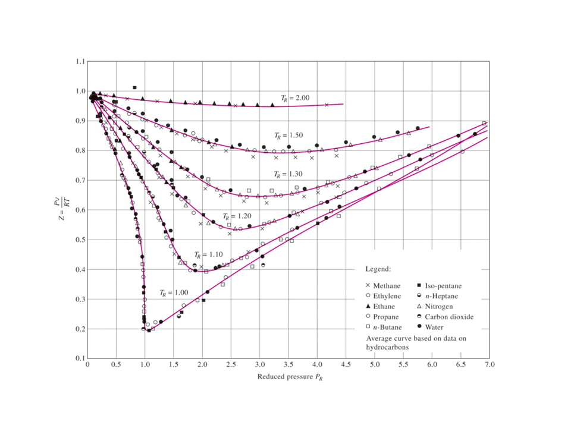

Revisa la Bibliografía recomendada en la sección Fuentes de Informacióndel curso.
Notas para la clase.
Ecuaciones de estado
La relación entre las variables de estado, temperatura, presión y volumen específico, se denomina ecuación de estado. Ahora consideramos la ecuación de estado para la fase vapor o gaseosa de sustancias compresibles simples.
Gas ideal
Con base en nuestra experiencia en química y física, recordamos que la combinación de las leyes de Boyle y Charles para gases a baja presión da como resultado la ecuación de estado para el gas ideal como
$$ p = \frac{R T}{v} $$donde $R$ es la constante de proporcionalidad y se denomina constante del gas y toma un valor diferente para cada gas. Si un gas obedece a esta relación se le llama gas ideal. A menudo escribimos esta ecuación como
$$ p v = R T $$La constante de gas para gases ideales está relacionada con la constante universal de los gases y es válida para todas las sustancias a través de la masa molar $M$ (o peso molecular). Sea $R_u$ la constante universal de los gases, de acuerdo con la descripción anterior, se tiene
$$ R = \frac{R_u}{M} $$La masa, $m$, está relacionada con el número de moles, $N$, de la sustancia a través del peso molecular o masa molar, $M$, como $ m = N M$ (consulte la Tabla A-1). La masa molar es la relación entre la masa y el número de moles, y tiene el mismo valor independientemente del sistema de unidades.
$$ M_{\text{aire}} = 28.97 \frac{\text{g}}{\text{gmol}} = 28.97 \frac{\text{kg}}{\text{kmol}} = 28.97 \frac{\text{lbm}}{\text{lbmol}} $$dado que $1 \text{ kmol} = 1000 \text{ gmol}$, y $1 \text{ kg} = 1000 \text{ g}$, $1 \text{ kmol}$ de aire tiene una masa de $28.97 \text{ kg}$ o $28,970 \text{ g}$.
La ecuación de estado de los gases ideales se puede escribir de varias maneras:
$$ p v = R T $$ $$ p \frac{V}{m} = R T $$ $$ p V = m R T $$ $$ p V = N R_u T $$ $$ p \frac{V}{N} = R_u T $$ $$ p \overline{v} = R_u T $$Aquí
$ p = \text{ presión absoluta en } \text{kPa o MPa}$.
$ \overline{v} = \text{ volumen específico molar en } \displaystyle{\frac{\text{m}^3}{\text{kmol}}}$.
$ T = \text{ temperatura absoluta en } \text{K}$.
$ R_u = \text{ constante universal de los gases } = 8.314 \displaystyle{\frac{\text{kJ}}{\text{kmol K}}}$.
Algunos valores de la constante universal de los gases, $R_u$, son:
$$ 8.314 \displaystyle{\frac{\text{kJ}}{\text{kmol K}}} $$
$$ 8.314 \displaystyle{\frac{\text{kPa }\text{m}^3}{\text{kmol K}}} $$
$$ 1.986 \displaystyle{\frac{\text{Btu}}{\text{lbmol R}}} $$
$$ 1,545 \displaystyle{\frac{\text{ft lbf}}{\text{lbmol R}}} $$
$$ 10.73 \displaystyle{\frac{\text{psia }\text{ft}^3}{\text{lbmol R}}} $$
La ecuación de estado del gas ideal puede derivarse de principios básicos si se supone:
La ecuación de estado del gas ideal se usa cuando
El punto crítico es ese estado donde hay un cambio instantáneo de la fase líquida a la fase de vapor de una sustancia. Los datos de puntos críticos se dan en la Tabla A-1.
Para comprender los criterios anteriores y determinar cuánto se desvía la ecuación de estado del gas ideal del comportamiento real del gas, introducimos el factor de compresibilidad, $Z$, de la siguiente manera:
$$ p \overline{v} = Z R_u T $$o
$$ Z = \frac{p \overline{v}}{R_u T} $$Para un gas ideal $Z = 1$, y la desviación de $Z$ de la unidad mide la desviación de la relación $p V T$ real de la ecuación de estado del gas ideal. El factor de compresibilidad se expresa en función de la presión reducida y la temperatura reducida. El factor $Z$ es aproximadamente el mismo para todos los gases a la misma temperatura reducida y presión reducida, que se definen como
$$ p_\text{R} = \frac{p}{p_\text{cr}} \qquad \text{y} \qquad T_\text{R} = \frac{T}{T_\text{cr}} $$donde $p_\text{cr}$ y $T_\text{cr}$ son la presión y la temperatura críticas, respectivamente. Los datos constantes críticos para varias sustancias se dan en la Tabla A-1. Esto se conoce como el principio de los estados correspondientes. La figura siguiente ofrece una comparación de los factores $Z$ para varios gases y apoya el principio de los estados correspondientes.

Cuando se desconoce $p$ o $T$, $Z$se puede determinar a partir de la tabla de compresibilidad con la ayuda del volumen específico pseudo-reducido, definido como
$$ v_R = \frac{v_{\text{actual}}}{\frac{R T_{\text{cr}}}{p_{\text{cr}}}} $$Estos gráficos muestran las condiciones en las que $Z \approx 1$ y el gas se comportan como un gas ideal:
Nota: Cuando $p_R$ es pequeña, debemos asegurarnos de que el estado no se encuentre en la región de líquido comprimido para la temperatura dada. Un estado líquido comprimido ciertamente no es un estado de gas ideal. Por ejemplo, la presión y la temperatura críticas para el oxígeno son $5.08 \text{MPa}$ y $154.8 \text{K}$, respectivamente; para temperaturas superiores a $300 \text{K}$ y presiones inferiores a $50 \text{MPa}$ (la presión de $1 \text{atm}$ es de $0.10135 \text{MPa}$), el oxígeno se considera un gas ideal.
Relación útil del gas ideal: la ley de los gases combinados
Al escribir la ecuación del gas ideal dos veces para una masa fija y simplificar, las propiedades de un gas ideal en dos estados diferentes están relacionadas por
$$ m_1 = m_2 $$o
$$ \frac{p_1 V_1}{R T_1} = \frac{p_2 V_2}{R T_2} $$así que
$$ \frac{p_1 V_1}{T_1} = \frac{p_2 V_2}{T_2} $$Otras ecuaciones de estado
Se han hecho muchos intentos para mantener la simplicidad de la ecuación de estado de los gases ideales, pero teniendo en cuenta las fuerzas intermoleculares y el volumen ocupado por las partículas, tres de ellos son: .
Las constantes que aparecen en las ecuaciones de Beattie-Bridgeman y Benedict-Webb-Rubin se dan en la Tabla A-29 para varias sustancias.